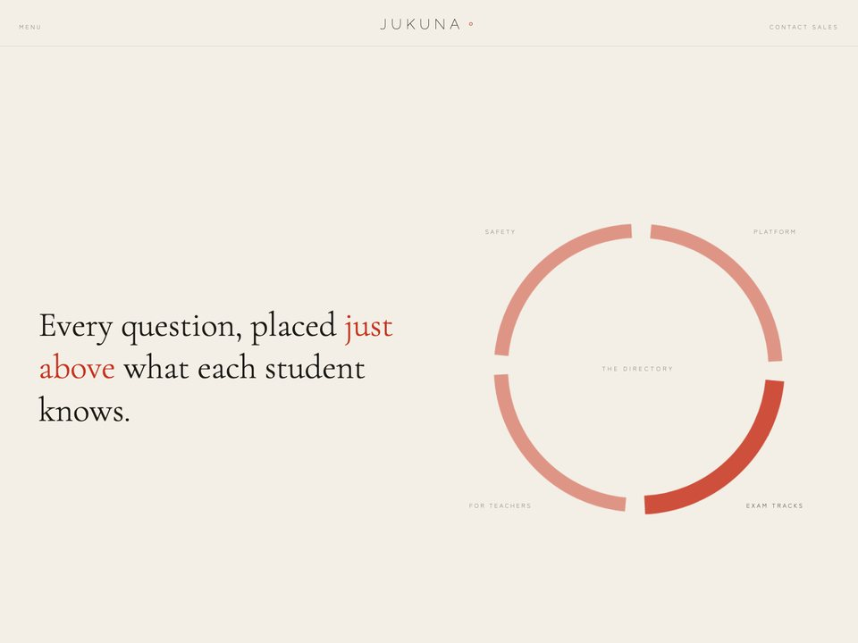

Jukuna
Adaptive exam prep for students in Japan, aimed at the point just above what they already know.
- Client
- Jukuna, an adaptive practice platform covering AP, IB, Digital SAT and IELTS tracks
- Scope
- Bilingual Japanese and English marketing site
- Heroes built
- Four explored, one shipped

Takes
Four takes on one idea: the edge of what a student knows.
All four say the same thing and none of them say it the same way. Point at any of them to see it in full colour.Each one resolves into full colour as it reaches the middle of the screen.
Build
What is actually in it.
- Type
- Three Japanese faces held on one baseline: Zen Old Mincho, IBM Plex Sans JP and Zen Kaku Gothic New, on a fluid
clamp()scale - Structure
- A ten-section landing page plus four subpages. Hand-written HTML and CSS, no framework
- Signature
- A sticky scroll-driven sequence, "ONE DAY ON THE PLATFORM · 一日", whose sections are generated in JavaScript
- Motion
- Canvas 2D, a marquee,
backdrop-filter, and a click-to-enter intro gate - Accessibility
prefers-reduced-motionhandled- Language
- Japanese and English throughout, not a translation layer bolted on